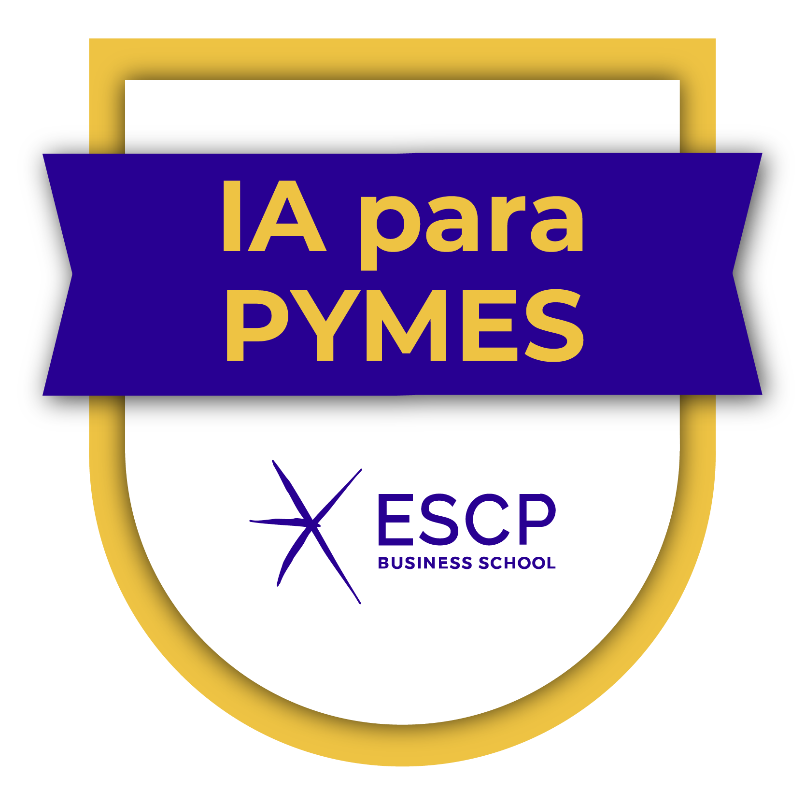

Soluciones prácticas, seguras y ajustadas a la normativa para hostelería, alimentación, formación y prevención en Málaga y provincia.
Servicios diseñados para cumplir normativa, reducir riesgos y mejorar procesos con acciones claras.
Revisión de instalaciones, procesos, documentación y personal con informe práctico y plan de mejoras.
Elaboración/actualización de APPCC, planes generales de higiene, registros y verificación.
Muestreos de superficies, alimentos y agua con interpretación de resultados y medidas correctoras.
Formación in-company y certificación de manipuladores: útil, clara y orientada a tu actividad.
Formación PRL, asesoramiento preventivo y apoyo técnico para empresas, trabajadores y autónomos.
Veterinario colegiado, Auditor Higiénico-Sanitario y Técnico Superior en Prevención de Riesgos Laborales, con más de 25 años de experiencia en inspección, auditoría, formación y consultoría para empresas.
Junto a Nieves Márquez fundé OLINK MARQUEZ AUDITORES Y FORMADORES S.L., combinando experiencia técnica y formación especializada para ayudar a empresas a cumplir la normativa, mejorar sus procesos y reducir riesgos.
Áreas de especialización: Seguridad Alimentaria, APPCC, auditorías higiénico-sanitarias, Prevención de Riesgos Laborales, formación en Medio Ambiente, toma de muestras, formación profesional y peritajes técnicos.
¿Qué incluye una auditoría higiénico-sanitaria?
Revisión de instalaciones, procesos, APPCC, personal y toma de muestras.
¿Cada cuánto se recomienda realizar auditorías?
Depende del riesgo, pero suele ser mensual o trimestral.
¿Trabajas con pequeños negocios?
Sí, desde bares hasta hoteles, industrias, centros educativos o pequeños negocios alimentarios.
¿Puedes elaborar un APPCC desde cero?
Sí, incluyendo formación, registros, verificación y adaptación a la actividad real del establecimiento.
¿También trabajas en Prevención de Riesgos Laborales?
Sí. Soy Técnico Superior en Prevención de Riesgos Laborales y desarrollo formación PRL, apoyo preventivo y contenidos prácticos para empresas y trabajadores.

¿Quieres un presupuesto o más información? Escríbenos o rellena el formulario.
Veterinario · Auditor Higiénico-Sanitario · Técnico Superior PRL
OLINK MARQUEZ AUDITORES Y FORMADORES S.L.